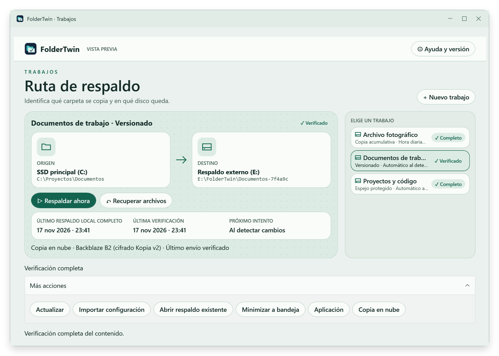

Dos copias locales y una cifrada, verificables.
FolderTwin protege carpetas en Windows 11 mediante identidades físicas NTFS, catálogos JSONL duplicados y almacén de objetos SHA-256 — con restauración limpia sin depender del origen ni de bases externas, y tercera copia cifrada opcional sobre Kopia y rclone.
Vista previa experimental: el motor y el paquete portable están verificados sobre datos sintéticos y volúmenes desechables; el piloto externo y las pruebas en hardware físico permanecen abiertos en la matriz pública antes de declarar la v1 estable.

Tres modos distintos para tres riesgos distintos.
El modo define cómo se conserva el contenido en disco; el disparador —bajo demanda, horario diario en el Programador de Windows o vigilancia continua con comparación acotada— se elige por separado en cada trabajo.
| Modo y componente | Garantía de operación | Límite verificado |
|---|---|---|
| Copia acumulativa | Añade y actualiza sin borrar exclusivos del destino; detiene ante conflicto o bitrot externo | Diario v3 + árbol navegable |
| Versionado por fecha | Puntos inmutables sobre objetos compartidos SHA-256; restaura archivos borrados |
Hasta 350 000 entradas / 512 MiB |
| Espejo protegido | Refleja el origen guardando lo retirado; exige revisión ante origen vacío o cambio masivo | 256 cubetas temporales |
| Índice local SQLite | Consultas SQLITE_OPEN_READONLY sin checkpoints por carpeta; 100 % prescindible al recuperar |
329 000 rutas en 2,7–4,6 s |
| Tercera copia cifrada | Sobre layout 2 sobre S3 o pasarela local 127.0.0.1; staging fuera de C: |
Caché Kopia acotada a 64 MiB |
-
1.0
Cerca nativa sobre handles NTFS
Resuelve
VOLUME_NAME_GUIDy los 24 bytes de identidad del directorio antes de leer o escribir. Si un disco cambia de letra se sigue reconociendo; si otro volumen reutiliza esa letra o aparece una junction, la ejecución se detiene. -
2.0
Planes inmutables antes de mutar
Toda publicación, cuarentena, abandono de plan pendiente o purga registra primero un diario sellado con checksum y vacía buffers. El registro de generaciones archiva historial antiguo de forma encadenada para no agotar sus 16 MiB vivos.
-
3.0
Restauración limpia e independiente
Los archivos recuperados se verifican en un área oculta
.foldertwin-restore-stagingy se entregan sin un solo residuo interno, incluso desde un perfil vacío mediante Abrir respaldo existente. -
4.0
Paquete portable reproducible
FolderTwin.exese distribuye separado de los arneses de prueba (tests/), con runtime.NET 10.0.15, inventario CycloneDX 1.6, archivo de fuentes exacto y reproducción determinista bit a bit entre dos compilaciones limpias.
Diseñado para fallar sin mentir.
Un corte de proceso, un archivo bloqueado o un disco lleno deja una ejecución pendiente reanudable, jamás un «Todo protegido» falso. Toda la solución compila sin dependencias externas de paquetes NuGet.
git clone https://github.com/mikepchelper-spec/FolderTwin.git
cd FolderTwin
dotnet build FolderTwin.sln -c Release
dotnet run --project tests/CopyProbe -c Release -- --product-storeSoftware libre hecho con rigor artesanal.
FolderTwin forma parte del ecosistema técnico de Atlas PC Support: sin telemetría oculta, sin suscripciones forzadas, sin cuentas obligatorias y publicado bajo licencia GNU GPL v3+ con fuentes verificables incluidas en cada paquete.
Apoya el desarrollo independiente
Si valoras las herramientas locales transparentes para Windows, puedes invitar un café o hacer una donación voluntaria vía PayPal para respaldar el tiempo de ingeniería, las auditorías de recuperación y el laboratorio de pruebas en discos físicos y nube real.